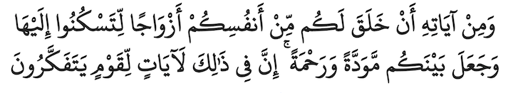
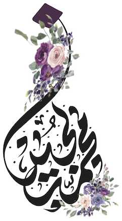
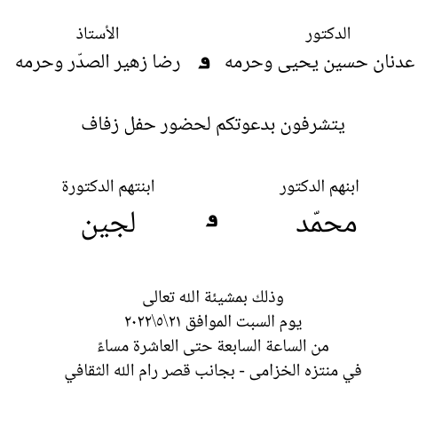
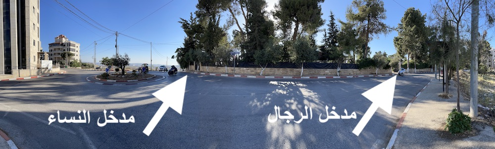

مدخل النساء أمام الدوار - تقاطع شارع سميحة خليل مع شارع طوكيو (المدخل الجنوبي)
مدخل الرجال في شارع سميحة خليل (المدخل الشمالي)

للقادمين من وسط رام الله (دوار المنارة) يرجى تتبع طريق رام الله-بيتونيا و الالتفاف يساراً للدخول للشارع المقابل لمركز أبو ريا للتأهيل
للقادمين من نابلس والذين يريدون مرافقة موكب العروسين، ينطلق الموكب من أمام منزل والد العروس الساعة الرابعة و النصف مساء